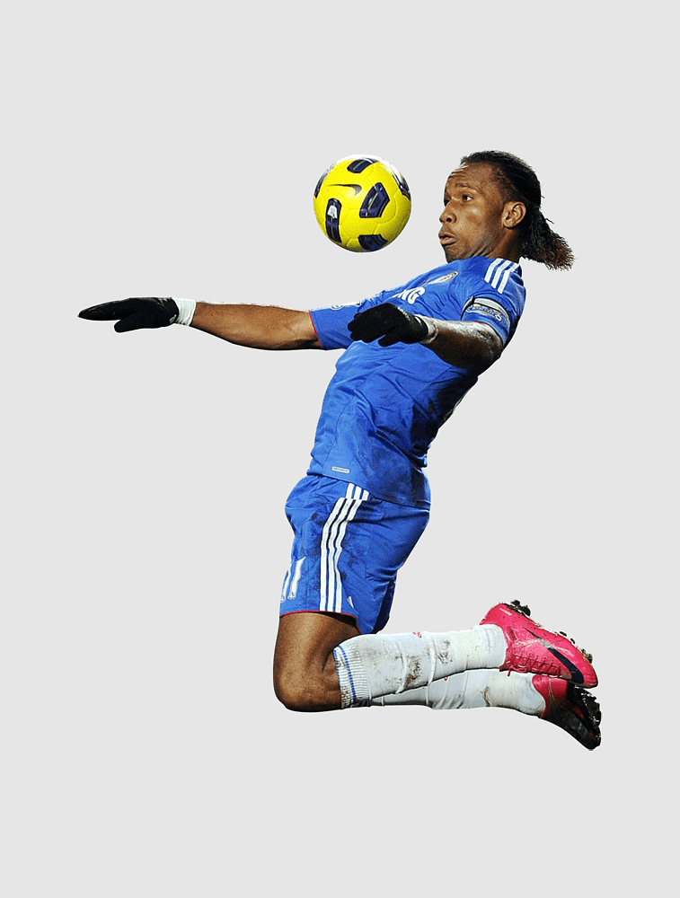
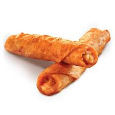

My web page
Sports

- soccer
-
rules
- equipment needed : Soccer ball, soccer nets, and 22 people.
Foods

my faverate food is taquitos
7-11 food order
taquotos consist of chees and other pepers all raped in a crust.
taquitos it is nomrmally sold at gas stations and is normely reconsised
as a to go quick snack which fills you up and dileavers a good taste
Summer
 the meaning of summer
My faverate seasion is summer because there is a long brake off school and
all my friends are home, when it is summer me and all my friends playing
soccer from morning to night and sometime we do other tihings like to
swimming at a lake or go cmping for some days, i love summer because in
winter i cant do hang out with my friemds and do other actavies as often
compared to summer.
the meaning of summer
My faverate seasion is summer because there is a long brake off school and
all my friends are home, when it is summer me and all my friends playing
soccer from morning to night and sometime we do other tihings like to
swimming at a lake or go cmping for some days, i love summer because in
winter i cant do hang out with my friemds and do other actavies as often
compared to summer.